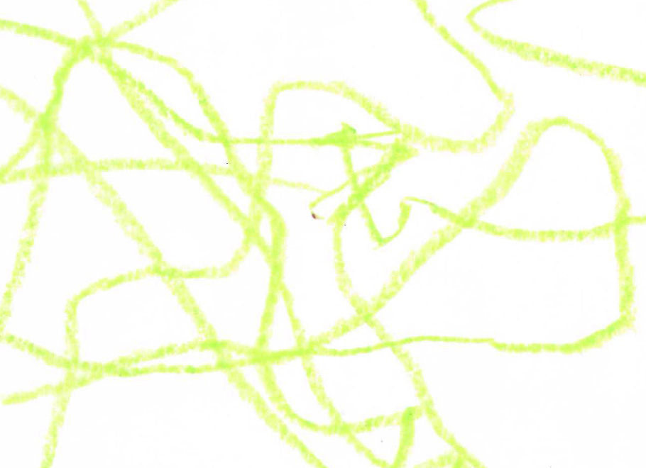

Antworld
This was preliminary research on the behaviour of ant colonies. I recorded their movements in different environments by tracing their paths.
Later this knowledge was used for a VR game environment in which the player was placed in the world of the ants. The ants being tracked live in order to create a realistic environment. An environment in which the two species needed to work together in order to accomplish the different levels.
Interesting about this project was the new possibility for contact in between species that is established with the introduction of new technologies.
